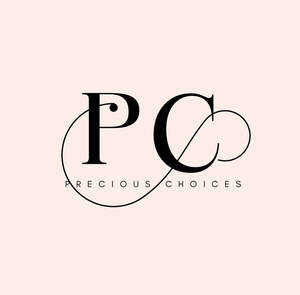

Trade Mark Journal No.2025/025 20 June 2025
UK00004213974 4 June 2025 (14)

- Class 14
- Sterling silver jewellery; Silver earrings; Silver necklaces; Gold jewellery; Jewellery made from silver; Silver bracelets; Silver; Gold plated brooches [jewellery]; Clips of silver [jewellery]; Silver thread [jewellery]; Silver thread [jewellery, jewelry (Am.)]; Silver thread [jewelry]; Gold earrings; Pewter jewellery; Gold necklaces; Gold plated earrings; Gold thread [jewellery, jewelry (Am.)]; Jewellery made from gold; Silver bullion; Gold bracelets; Gold plated bracelets; Silver rings; Gold thread [jewellery]; Gold thread jewelry; Gold thread [jewelry]; Silver ingots; Wire of precious metal [jewellery, jewelry (Am.)]; Jewellery chain of precious metal for bracelets; Spun silver [silver wire]; Jewellery chain of precious metal for necklaces; Platinum jewelry; Silver watches; Jewellery plated with precious metals; Jewellery containing gold; Jewellery chain of precious metal for anklets; Jewellery fashioned from bronze; Silver-plated earrings; Threads of precious metal [jewellery, jewelry (Am.)]; Jewellery made of plated precious metals; Wire of precious metal [jewellery]; Rings [jewellery] made of non-precious metal; Jewellery fashioned from non-precious metals; Silver alloys; Ivory [jewellery, jewelry (Am.)]; Cloisonné jewellery [jewelry (Am.)]; Pearls [jewellery, jewelry (Am.)]; Wire of precious metal [jewelry]; Rings [jewellery] made of precious metal; Jewellery in semi-precious metals; Unwrought silver; Medallions [jewellery, jewelry (Am.)]; Jewellery made of bronze; Gold; Ornaments [jewellery, jewelry (Am.)]; Earrings of precious metal; Charms [jewellery, jewelry (Am.)]; Jewellery fashioned of precious metals; Bracelets [jewellery, jewelry (Am.)]; Silver alloy ingots; Jewellery in non-precious metals; Brooches [jewellery, jewelry (Am.)]; Jade [jewellery]; Jewellery, including imitation jewellery and plastic jewellery; Amber pendants being jewellery; Silver-plated necklaces; Brooches [jewelry]; Jewelry brooches; Brooches being jewelry; Bracelets [jewellery]; Jewellery made of non-precious metal; Jewelry; Enamelled jewellery; Gold plated rings; Chain mesh of precious metals [jewellery]; Jewellery made of crystal coated with precious metals; Trinkets [jewellery, jewelry (Am.)]; Jewellery coated with precious metals; Identification bracelets of precious metal [jewelry]; Jewellery coated with precious metal alloys; Unwrought silver alloys; Gold bullion; Silver and its alloys; Gold bullion coins; Gold alloys; Silver thread; Gold coins; Gold ingots; Gold alloy ingots; Gold plated chains; Objet d'art of enamelled silver; Gold rings; Figurines made from silver; Gold medals; Silver, unwrought or beaten; Watches made of plated gold; Silver-plated bracelets; Gold and its alloys; Imitation gold; Silver objets d'art; Objet d'art of enamelled gold; Gold chains; Gold-plated earrings; Cuff links made of silver plate; Medals coated with precious metals; Gold base alloys; Platinum alloy ingots; Silver-plated rings; Gold-plated necklaces; Ornaments, made of or coated with precious or semi-precious metals or stones, or imitations thereof; Figurines made from gold; Jewelry charms in precious metals or coated therewith; Square gold chain; Trophies coated with precious metal alloys; Watches made of gold; Platinum [metal]; Bracelets of precious metal; Platinum ingots; Gold, unwrought or beaten; Necklaces of precious metal; Figurines made of imitation gold; Chains made of precious metals [jewellery]; Ingots of precious metal; Rings coated with precious metals; Jewellery of yellow amber; Key charms coated with precious metals.
Precious Choices Limited